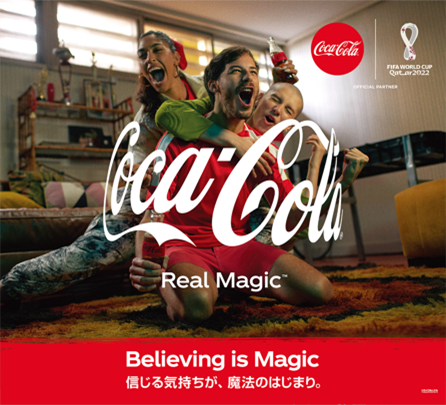
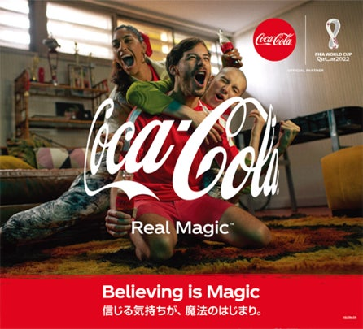
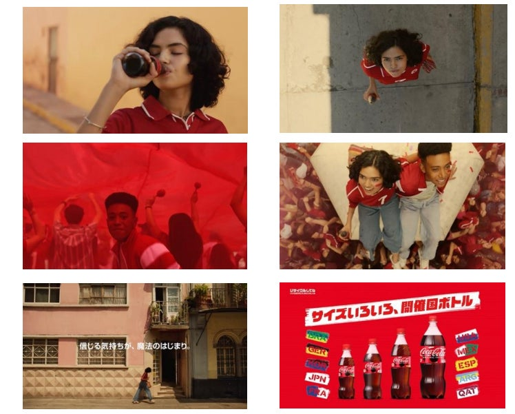

案例发生了什么
谁参与Coca-Cola
发生节点 / 场景2022 卡塔尔世界杯；全球；官方合作伙伴
传播形式历史符号商品化；包装媒体型；扫码互动型；零售承接型
传播核心日本可口可乐以“Believing Is Magic”为主题，把十个历史东道主的文化元素做成世界杯限定瓶，并在《Street》广告里让街头球迷的相信与欢呼不断传递。



日本可口可乐以“Believing Is Magic”为主题，把十个历史东道主的文化元素做成世界杯限定瓶，并在《Street》广告里让街头球迷的相信与欢呼不断传递。
限定瓶承担货架识别；《Street》广告片建立总主题；扫描包装参加 Coke ON 测验，官方稿披露 30 万名 LINE 积分奖励；另设赛果预测与 6000 份奖品，形成内容、包装、App 与奖励闭环。
MARKETING KNOWLEDGE ROUTER · 营销知识路由器
营销启发卡
把历届经典的记忆点、商业结构和迁移方法放在同一层阅读。 卡片底部按主题连接全站相关案例、经典方法与深度文章。
01核心动作
十个东道主国家的世界杯记忆
收藏历届记忆、预测比赛的期待，以及普通球迷相信奇迹会发生的参与感；十个东道主国家的世界杯记忆，被压缩到一排可收藏的瓶身上。
02传播与商业机制
瓶身是可口可乐最强零售媒体
瓶身是可口可乐最强零售媒体；历史图案让每一次购买都带上届次记忆，二维码再把包装连接到竞猜和奖励；限定瓶承担货架识别；《Street》广告片建立总主题；扫描包装参加 Coke ON 测验，官方稿披露 30 万名 LINE 积分奖励；另设赛果预测与 6000 份奖品，形成内容、包装、App 与奖励闭环。
03可复用的方法
包装联名不能只换皮
包装联名不能只换皮；最好同时具备系列收藏逻辑、可扫描入口和与比赛进程相关的奖励。
适用条件、风险与证据
- 30 万和 6000 均为品牌活动名额，不等于实际参与人数或销量增量。
- 后续复盘还应补齐发布主体、时间线、真实执行图、媒介范围和结果口径；没有这些证据时，不把行业评价或赛事总热度写成品牌增量。
资料与来源
官方资料与原始来源
市场 / 权益
全球
官方合作伙伴
创意打法
历史符号商品化；包装媒体型；扫码互动型；零售承接型
来源按品牌/官方发布、官方账号留存、权威媒体、获奖案例库分层记录；品牌与奖项自报结果不视作独立审计。